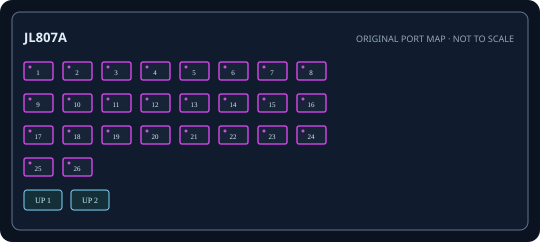

[ EXACT MODEL / SKU ]
HPE Aruba Instant On 1960 24G 2XGT 2SFP+ PoE Switch (JL807A)
Exact physical interfaces and their nominal link rates are documented below. Link rates are not measured application throughput.

IDENTIFICATION: Confirm model/SKU, hardware revision, power supply and firmware on the physical unit. No measured throughput is asserted.
Model-specific specifications and compatibility
| Exact model / SKU | Instant On 1960 24G 2XGT 2SFP+ PoE Switch (JL807A); manufacturer SKU JL807A. |
|---|---|
| Hardware revision | Exact manufacturer SKU JL807A, 24-port PoE model. Hardware revision is label-specific; check the unit label and HPE record. |
| Port count and rates | 24 x 10/100/1000BASE-T PoE ports plus two 10GBASE-T RJ-45 ports. Rates are per interface; aggregate full-duplex capacity is not a single-port throughput figure. |
| PoE standard and budget | IEEE 802.3af/at PoE/PoE+ on 24 access ports; 370 W aggregate budget. Verify endpoint class draw and unit power label. |
| Uplinks | Two 10GbE SFP+ slots plus two 10GBASE-T interfaces. |
| Management and VLAN | Instant On app/cloud or local web management; 802.1Q VLAN, LACP, QoS, ACL and static-routing features depend on firmware. |
| Power input | Internal AC supply 100-240 V, 50/60 Hz; budget endpoints within 370 W total. |
| Power and compatibility | Rack mount; match PoE class and sum device demand; use correct cabling/SFP+ modules and firmware. |
| Measured performance | No independently measured packet-forwarding rate or latency is claimed. Test with documented firmware, packet sizes, port pairs, VLAN/QoS configuration and traffic direction if required. |
Installation and identification notes
- Record SKU, revision, PSU label, serial, firmware and port mapping before commissioning; similar model suffixes may use different power and firmware.
- Match copper cable category/length and SFP rate, wavelength, fiber type and reach to both ends of every link.
- For PoE models, confirm endpoint IEEE class negotiation and calculate demand against both per-port limits and aggregate budget.
- Preserve configuration backups and vendor documentation without publishing credentials or private network data.
Manufacturer datasheets and manuals
- HPE Aruba Instant On 1960 Series official data sheetOfficial HPE Aruba model/series support or specification source; confirm revision against the unit label.
- HPE support: Instant On 1960 manuals and guidesOfficial HPE Aruba model/series support or specification source; confirm revision against the unit label.
Use the exact label revision to choose current firmware, installation manuals and platform compatibility notes.